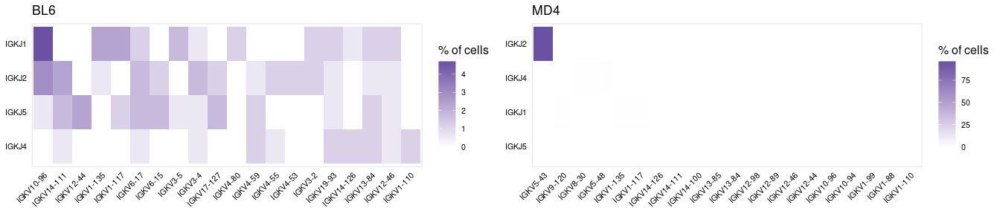

The djvdj package provides a range of tools to analyze and manipulate single cell V(D)J sequencing data. These tools are straightforward and easily integrate into a standard Seurat workflow.
Installation
You can install the development version of djvdj from github with:
# install.packages("devtools") devtools::install_github("rnabioco/djvdj")
Import
With djvdj you can import V(D)J sequencing results from Cell Ranger and add these data to your current Seurat object using import_vdj(). Additional functions are provided to filter (filter_vdj()) and manipulate (mutate_vdj()) the Seurat object based on a range of V(D)J metrics including chains, clonotypes, and CDR3 sequences.
# Import VDJ data paths <- c( KI_DN3_GE = "data/tcr/KI_DN3_TCR", KI_DN4_GE = "data/tcr/KI_DN4_TCR", WT_DN3_GE = "data/tcr/WT_DN3_TCR", WT_DN4_GE = "data/tcr/WT_DN4_TCR" ) so_tcr <- import_vdj( sobj_in = so_tcr, # Seurat object vdj_dir = paths # Cellranger output directories ) # Filter for paired chains so_filt <- filter_vdj( sobj_in = so_tcr, # Seurat object filt = all(c("TRA", "TRB") %in% chains) # Condition for filtering )
Calculate
djvdj allows you to calculate a range of population diversity and similarity metrics implemented with the abdiv package. The function calc_diversity() can be used to measure diversity on a per-cluster or per-sample basis to allow for comparison across conditions. calc_similarity() will measure repertoire overlap between clusters or samples to allow for direct comparisons between cells of interest. Additional functions are also available to calculate clonotype abundances (calc_abundance()) and relative gene usage (calc_usage()).
# Calculate five different diversity metrics for each sample fns <- list( "simpson" = abdiv::simpson, "shannon" = abdiv::shannon, "margalef" = abdiv::margalef, "menhinick" = abdiv::menhinick, "brillouin_d" = abdiv::brillouin_d ) so_tcr <- calc_diversity( sobj_in = so_tcr, # Seurat object clonotype_col = "cdr3", # meta.data column containing clonotype ids cluster_col = "orig.ident", # meta.data column containing cell labels method = fns # abdiv method to use )
Plot
For each ‘calc’ function, djvdj also provides a corresponding ‘plot’ function to summarize the results.
# Compare the usage of different V and J genes ggs <- plot_usage( sobj_in = so_tcr, # Seurat object gene_cols = c("v_gene", "j_gene"), # meta.data column(s) containing genes cluster_col = "orig.ident", # meta.data column containing cell labels chain = "TRB", # Chain to use for filtering genes chain_col = "chains", # meta.data column containing chains identified plot_colors = c("grey90", "#6A51A3") # Colors to use for heatmap ) %>% imap(~ .x + ggtitle(.y)) plot_grid(plotlist = ggs)
